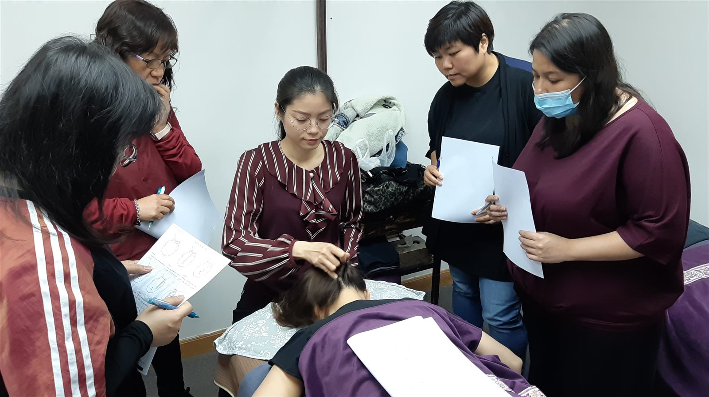

The Bojin Journal · Cheeks & Smile Lines
Smile lines settling in and cheeks a little lower? A gentle 5-minute bojin lift for women over 40

If your smile lines seem to be settling in a little deeper, and your cheeks don't sit quite as high as they used to, here's the gentle truth: it isn't that you've let yourself go. The fascia around your mouth and cheeks holds tension and quietly pulls downward, circulation slows a touch, and after 40 the natural changes in collagen and the little cushions of fat in your mid-face mean everything sits a bit softer. It's simply a face that has smiled a lot, and it responds beautifully to a kinder, smarter approach.
The lovely part is that you don't need new tools or a fussy routine. In about five minutes you can help your cheeks look a little fresher and more lifted, using the featherlight touch of the Bojin Method. Let's look at why smile lines deepen, and then walk through the exact steps.
Why do my smile lines deepen and my cheeks drift down?
Your face is layered with fascia — a thin, web-like tissue that wraps every muscle. When you talk, chew, smile, and hold stress in your jaw all day, the fascia and small muscles around your mouth and cheeks stay busy and can grow tight. Tight tissue tends to pull, and around the mid-face that pull is quietly downward, which can make the folds from your nose to the corners of your mouth look a little more etched.
Circulation plays a part too. When this area is tense, fresh blood and fluid move through more slowly, so the skin can look a bit flatter and less luminous than it does on a good, well-rested day.
Then there's the natural arc of time. After 40, we gradually make less collagen, and the small fat pads that once sat high in the cheeks lose a little volume and settle lower. With slightly less cushioning and bounce underneath, the smile lines that were always there simply show a touch more. None of this means something is wrong. It's just how a well-loved face changes, and it's something you can meet with gentle, regular care.
Why a gentle bojin approach helps
If you already love your gua sha, wonderful. Keep your stone. Gua sha is a beautiful tool, and it's everywhere in the US for good reason. Bojin comes from the same roots. Think of it as the sister technique, the one that focuses on method rather than the tool in your hand.
Here's the shift that matters on the cheeks: the goal isn't to press hard into the fold or to "iron out" a line. It's to release the downward pull that tight fascia creates, and to invite fresh circulation back in, so the whole mid-face looks a little more awake and lifted. When gua sha on the cheeks hasn't given you what you hoped for, it's rarely the stone and rarely you. It's usually that no one taught you to work upward and outward with a featherlight touch, letting the tissue soften rather than forcing it. That gentle method is what the Bojin approach adds on top of the tool you already have.
You're not trying to fill a line or lift like surgery. You're releasing the downward pull and waking up circulation, so your cheeks look a little fresher and sit a touch higher on their own. Keep your stone, and add the method — light and slow beats hard and fast every time.
The gentle 5-minute cheek and smile-line release
You can do this with clean fingertips or the flat edge of your gua sha stone. Smooth on a little facial oil or cream first so everything glides and nothing tugs. Every stroke should feel like a soft, upward invitation, never a workout. If you feel the skin dragging or stretching, ease off — you're pressing too hard.
- Warm and settle. Rest your clean, cupped palms gently over your cheeks for three slow breaths. Let your jaw unclench and your shoulders drop. This softens the area and helps you slow down before you begin.
- Soften around the mouth. With a fingertip, make tiny, feather-light circles beside your smile lines, from the sides of your nose down toward the corners of your mouth. You're gently coaxing held tension to let go, not digging into the fold.
- Lift the cheeks up and out. Glide lightly from beside your nose, up and outward across the cheek toward the top of your ear. Slow and airy, three or four times per side. This is the stroke that invites the mid-face to feel a little more lifted.
- Ease the jaw and cheek edge. Make soft strokes from the corner of your mouth outward along the cheek toward the ear, releasing the tension that likes to gather along the jawline and pull downward.
- Finish down the neck. Sweep gently from just below your ears down the sides of your neck toward your collarbones. This gives everything you just moved a clear path to drain away, so your face feels lighter.
What can I honestly expect?
Done gently and regularly, this release can help your cheeks look a little fresher, more lifted, and more awake, and it tends to help your serum or moisturiser absorb better too. Many women find the quiet win is simply how relaxed and cared-for it feels — a few unhurried minutes that ease a clenched jaw and give a small lift of confidence when you catch your reflection.
Be kind about the results. This is gentle circulation support and a soothing ritual, not a way to erase lines, melt fat, or replace fillers, and it works best alongside good sleep, water, and a little patience. Changes in your face that are sudden, one-sided, painful, or come with other symptoms are worth mentioning to your doctor rather than massaging.
Quick answers
Why are my smile lines getting deeper after 40?
Smile lines, or nasolabial folds, deepen for a mix of gentle reasons. The fascia and small muscles around your mouth and cheeks hold tension and quietly pull downward, circulation slows a little, and after 40 the natural collagen and fat-pad changes mean the mid-face has a bit less lift and cushioning. It's a normal part of a face that has smiled a lot, not a flaw.
Can I use my gua sha stone on my cheeks and smile lines?
Yes. Keep your gua sha and use its flat edge with a light, upward-and-outward glide, or just use clean fingertips. On the cheeks the method matters more than the tool: a featherlight touch with a little oil or cream so nothing tugs, and slow strokes that lift and drain rather than press hard into the fold.
Will bojin get rid of my smile lines or replace fillers?
No, and it's honest to say so. Bojin is a gentle wellness ritual that releases downward pull and supports circulation, so your cheeks can look a touch fresher and more lifted. It doesn't fill lines, melt fat, or replace fillers or any cosmetic or medical procedure. Think of it as kind daily care, not a treatment.
How often should I do this cheek release to see a difference?
Most women feel calmer and look a little fresher the same day, and notice a softer, more lifted look with regular practice over a few weeks. Five gentle minutes most days does far more than one intense session. It works best alongside sleep, water, and patience, and there's no need to press harder to speed it up.
Want the full cheek-lifting method?
Get the free Bojin guide and learn the featherlight technique step by step, so your daily release feels easy and your cheeks look a little fresher and more lifted. It's the method to add to the tool you already have.
Get the free guideYu-Ting Lan is an international bojin instructor and the founder of Héhé Studio. She has taught her bojin method to close to a thousand students — from complete beginners to grandmothers — across Taiwan, Hong Kong, and Malaysia.